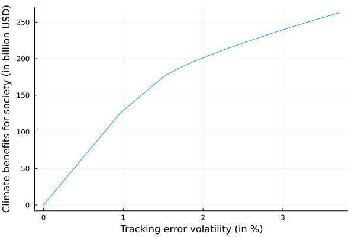

Climate Investing
We now turn to the use of climate costs for passive management (optimized portfolio)
Benchmark Climate Costs
Let's first create a struct Benchmark to store the main information we have:
Base.@kwdef mutable struct Benchmark
b::Vector{Float64} # benchmark weights
c::Vector{Float64} # Climate costs per $ mv
σ::Vector{Float64} # Volatility
ρ::Matrix # Correlation matrix
Σ::Union{Matrix,Nothing} = nothing # Covariance Matrix
end
our_benchmark = Benchmark(b = [0.23, 0.19, 0.17, 0.13, 0.09, 0.08, 0.06, 0.05],
c= [0.06, 0.8, 0.39, 0.01, 0.05, 0.13, 0.5, 0.45],
σ = [0.22, 0.20, 0.25, 0.18, 0.35, 0.23, 0.13, 0.29],
ρ = ρ)Given the Climate costs per $ mv and the respective weights for each issuer, how to compute the benchmark associated climate costs?
We have:
\[C^{costs}(b) = \sum^8_{i=1}b_i c^{costs}_i*MV\]
\[=b^TC^{costs}*MV\]
Where $C^{costs}$ is the climate costs associated with the benchmark, $b$ is the vector of weights of the benchmark, $c^{costs}$ is the climate costs per of market value and $MV$ is the overall market value of the benchmark.
Let's implement it in Julia:
function get_benchmark_climate_costs(bench::Benchmark, mv::Int)::Float64
return - round(bench.b' * bench.c * mv; digits= 2)
end
get_benchmark_climate_costs(our_benchmark, 1000) # suppose the MV of the benchmark is 1000 billions of USDThe output is:
-300.8Which means that the benchmark climate negative externalities amount 300.8 billion USD!
Climate Benefits to Society
Having the previous benchmark, let's assume a portfolio with the same issuers than the benchmark, but different weights $x$. How can we compare the relative performance of the tilted portfolio compared to the benchmark?
We can compute the "climate benefits to society", meaning the avoided climate-related costs with the portfolio:
\[C^{benefits} = - (x-b)^T c * MV\]
Base.@kwdef mutable struct TiltedPortfolio
x::Vector{Float64} # Optimal weights
end
other_portfolio = TiltedPortfolio(x = [0.30, 0.10, 0.08, 0.02, 0.48, 0.01, 0.005, 0.0055])
function get_climate_benefits(portfolio::TiltedPortfolio, bench::Benchmark, mv::Int)::Float64
return -1 * round((portfolio.x - bench.b)' * bench.c * mv;digits = 5)
end
get_climate_benefits(other_portfolio, our_benchmark,1000)Which gives:
141.125It means that investing in the tilted portfolio defined previously allows to reduce by 141 billion USD the climate-related costs!
Climate Benefits vs. Tracking Error Control: The Efficiency Frontier
An interesting arbitrage to evaluate is the one regarding maximizing climate benefits for society while minimizing the tracking error control. We will then draw the corresponding efficiency frontier.
Tracking Error Volatility
The tracking error volatility can be computed such as:
\[\sigma(x|b) = \sqrt{(x-b)^T\Sigma(x-b)}\]
using LinearAlgebra
function get_cov_from_corr!(bench::Benchmark)::Benchmark
D = diagm(bench.σ) # diagonal matrix of volatiltiy
bench.Σ = D * bench.ρ * D # multiplying columns and rows of correlation matrix by volatiltiy
return bench
end
get_cov_from_corr!(our_benchmark)
function tracking_error_volatility(portfolio::TiltedPortfolio, bench::Benchmark)::Float64
return sqrt((portfolio.x - bench.b)' * bench.Σ * (portfolio.x - bench.b))
end Tracking Error Control
The objective function is
\[x^*(\gamma) = argmin \frac{1}{2}x^T\Sigma x-x^T(\gamma * -c +\Sigma b)\]
(ie. the efficient portfolio must reduce the climate-related costs while minimizing the tracking error volatility compared to the benchmark, with respect to the $\gamma$ parameter or risk aversion parameter).
- The constraints are simply:
\[1^Tx=1\]
(ie. the weights must sum to one)\[0\leq x \leq 1\]
(ie. the weights must be between 0 and 1)
using JuMP, COSMO # for the optimization
# tilt the benchmark according to gamma
function portfolio_tilting(bench::Benchmark, γ::Float64)::TiltedPortfolio
n = length(bench.c) # number of assets
model = JuMP.Model(COSMO.Optimizer)
# the optimal weights we want to find
@variable(model, x[1:n])
@objective(model, Min, 1/2 * x' * bench.Σ * x - x' * (γ * -1 * bench.c + bench.Σ * bench.b))
@constraint(model, zeros(n) .<= x .<= ones(n))
@constraint(model, ones(n)' * x == 1)
JuMP.optimize!(model)
portfolio = TiltedPortfolio(x = JuMP.value.(x))
return portfolio
end
# simulate for gammas between 0 and 10
using Plots
gammas = [i for i in 0.0:0.001:0.012]
climate_benefits = zeros(length(gammas))
excess_te = zeros(length(gammas))
for i in 1:length(gammas)
new_portfolio = portfolio_tilting(our_benchmark, gammas[i])
climate_benefits[i] = get_climate_benefits(new_portfolio, our_benchmark, 1000) # suppose 1000 billion of MV for the benchmark
excess_te[i] = tracking_error_volatility(new_portfolio, our_benchmark) * 100
end
plot(excess_te, climate_benefits, xlabel = "Tracking error volatility (in %)",
ylabel = "Climate benefits for society (in billion USD)",
label = "")